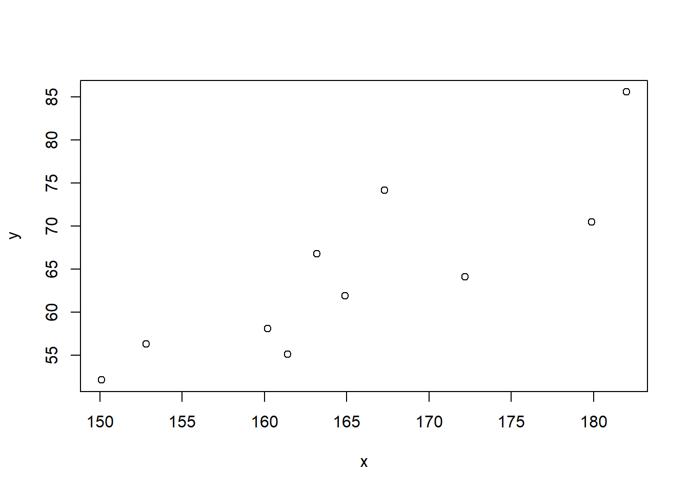
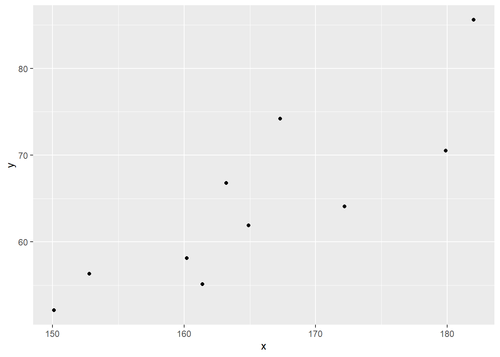

第2章 記述統計学のおさらい
2.1 平均，分散，標準偏差
平均は以下のように定義される．
\[\bar{x}=\frac{\sum_{i=1}^nx_i}{n}=\frac{x_1+x_2+\cdots +x_n}{n}\]
Rで計算する場合は，定義通りsum(x)/length(x)とするか，組み込み関数を用いてmean(x)とする．講義ノート2.2.1の身長データの例．
## [1] 165.4## [1] 165.4平均の特性については平均を実感するも参照のこと．
分散の定義は以下の通りである． \[\hat{\sigma}^2=\frac{1}{n}\sum_{i=1}^n (x_i-\bar{x})^2=\frac{(x_1-\bar{x})^2+(x_2-\bar{x})^2+\cdots+(x_n-\bar{x})^2}{n}\]
Rのデフォルトの分散関数var(x)は\(n-1\)で割る不偏分散である．講義ノートの定義の分散を計算させたい場合は，定義に基づく計算をそのまま行うか，var(x)に\((n-1)/n\)を掛ければよい．
## [1] 97.664## [1] 97.664標準偏差は分散のルートを取ったものである．
\[\hat{\sigma}=\sqrt{\hat{\sigma}^2}=\sqrt{\frac{1}{n}\sum_{i=1}^n (x_i-\bar{x})^2}\]
Rのデフォルトの標準偏差関数はsd(x)であり，これは不偏分散のルートである．
## [1] 9.88251## [1] 9.88251分散の特性についてはばらつきを実感するも参照のこと．
2.2 標準得点
Rでscale(x)をもちいてベクトルを一括して標準得点に変換できる．ただし，標準偏差は\(n-1\)でわる定義を採用している．
\[z_i=\frac{x_i-\bar{x}}{\hat{\sigma}_x}\]
## [1] -1.2095520 -1.4687417 1.5935368 -0.2111916 0.1823928 -0.4991802
## [7] -0.0479981 -0.3839848 1.3919448 0.6527741## [1] -5.412337e-16## [1] 1標準化については標準化を実感するも参照のこと．
2.3 共分散と相関係数
2変数の関係を散布図で確認する．
x <- c(152.8,150.1,182,163.2,167.3,160.2,164.9,161.4,179.9,172.2)
y <- c(56.3,52.1,85.6,66.8,74.2,58.1,61.9,55.1,70.5,64.1)
plot(x,y)
また，tidyverseに含まれるggplot2で散布図を書くと以下のようになる．パッケージを用いる場合は，先にlibrary(tidyverse)を実行してパッケージを呼び出しておく．
## -- Attaching packages --------------- tidyverse 1.3.0 --## √ ggplot2 3.3.0 √ purrr 0.3.4
## √ tibble 3.0.1 √ dplyr 0.8.5
## √ tidyr 1.0.3 √ stringr 1.4.0
## √ readr 1.3.1 √ forcats 0.5.0## -- Conflicts ------------------ tidyverse_conflicts() --
## x dplyr::filter() masks stats::filter()
## x dplyr::lag() masks stats::lag()tibble(x = c(152.8,150.1,182,163.2,167.3,160.2,164.9,161.4,179.9,172.2),
y = c(56.3,52.1,85.6,66.8,74.2,58.1,61.9,55.1,70.5,64.1)) %>%
ggplot() +
geom_point(aes(x = x, y = y)) 
次に，共分散を計算する．
\[\begin{align*} c_{xy}&=\frac{1}{n}\sum_{i=1}^n(x_i-\bar{x})(y_i-\bar{y}) \\ &=\frac{(x_1-\bar{x})(y_1-\bar{y})+(x_2-\bar{x})(y_2-\bar{y})+\cdots+(x_n-\bar{x})(y_n-\bar{y})}{n} \nonumber \end{align*}\]
Rで共分散はcov(x, y)であり，\(n-1\)でわる定義を採用している．
## [1] 81.313## [1] 81.313相関係数は，標準化した2変数の共分散であり，
\[r_{xy}=\frac{c_{xy}}{\hat{\sigma}_x\hat{\sigma}_y}\]
で計算できる．Rでは相関係数関数cor(x,y)が用意されている．公式通りcov(x,y)/(sd(x)*sd(y))としてもよい（基準化されている値なので\(n\)で割るか\(n-1\)で割るかは関係ない）．
## [1] 0.8496357## [1] 0.8496357